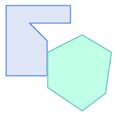
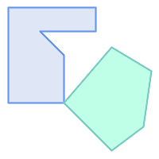
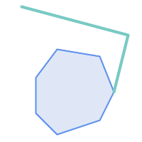
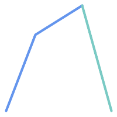
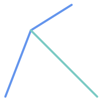
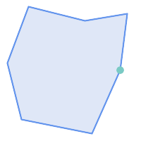

Name
ST_Touches — 二つのジオメトリが共通のポイントを少なくとも一つ持ち、かつ内部でインタセクトしないかどうかをテストします。
Synopsis
boolean ST_Touches(geometry A, geometry B);
説明
AとBがインタセクトするがAの内部とBの内部がインタセクトしない場合にはTRUEを返します。AとBが少なくとも一つの共有点があり、共有点が少なくとも一つの境界の上にあることと同じです。ポイント/ポイント入力では、ポイントは境界を持たないため、常にFALSEを返します。
数学的に述べると、この関係は次のようになります。

この関係は、二つのジオメトリのDE-9IM交差行列がどれか一つに合致すると、関係が保持されていることになります。
FT*******
F**T*****
F***T****
![[Note]](images/note.png) | |
This function automatically includes a bounding box comparison
that makes use of any spatial indexes that are available on the geometries. インデックスの使用を避けるには |
![[Important]](images/important.png) | |
Enhanced: 3.0.0 |
 This method implements the OGC Simple Features
Implementation Specification for SQL 1.1. s2.1.1.2 // s2.1.13.3
This method implements the OGC Simple Features
Implementation Specification for SQL 1.1. s2.1.1.2 // s2.1.13.3
This method implements the SQL/MM specification. SQL-MM 3: 5.1.28
例
次の例ではST_Touches述語はTRUEを返します。

| 
| 
|

| 
| 
|
SELECT ST_Touches('LINESTRING(0 0, 1 1, 0 2)'::geometry, 'POINT(1 1)'::geometry);
st_touches
------------
f
(1 row)
SELECT ST_Touches('LINESTRING(0 0, 1 1, 0 2)'::geometry, 'POINT(0 2)'::geometry);
st_touches
------------
t
(1 row)